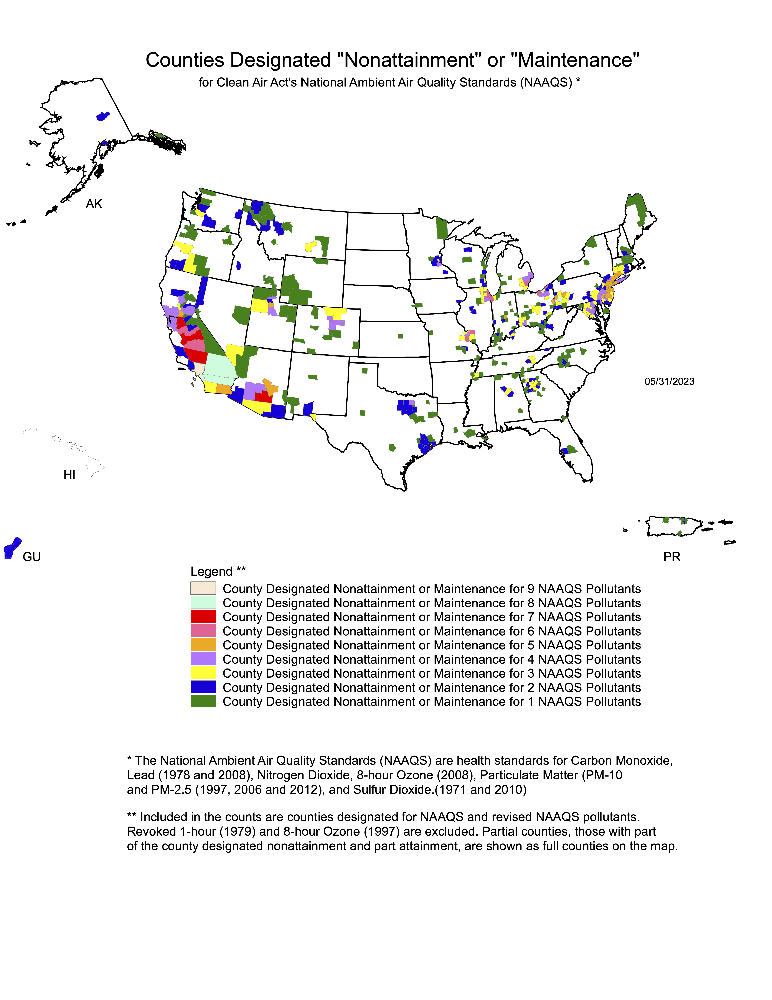
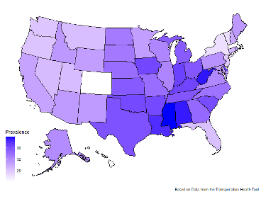
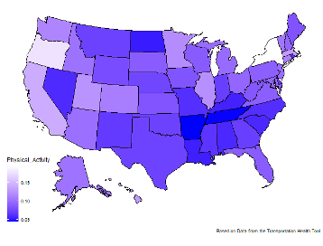
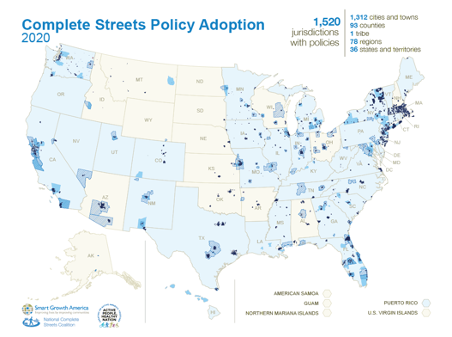

knitr::include_graphics("images/Vision_Zero_Network_Community_Map_August_2022.png")
This chapter presents an overview of existing transportation energy policies related to health broadly, followed by a review of the literature on access to nutrition specifically.
Transportation policy impacts the way our transportation systems function in cities, and along with that, impacts the way that we live our lives as well. For example, transportation policy that demands a certain level of safety on roadways creates a better, safer, travel network for those using the roads. Also, policy that puts the pedestrian first helps improve the quality and quantity of sidewalks and bike ways in cities, improving active transportation. There are many different types of policies that can be established, whether they be required by federal law, or established through the individual decisions of local or state governments. Because these policies make such a big impact on the way we live it is important to discover what types of policies exist currently, where there are areas that are missing in policy and practice, and discover how this research can help to bridge the gap between identified need and practical application.
How UDOT and other departments of transportation (DOTs) approach their responsibility to improve quality of life beyond providing mobility is a relatively recent concern. In this section, we discuss how DOTs have begun incorporating public health concerns into their policy making and project prioritization processes.
Transportation impacts public health across several different sectors identified in the literature, which have been grouped together into four general topics: Traffic Safety, Pollution, Active Transportation, and Access to Community Resources. These four topics mirror the focus points of the UDOT mission, with Traffic Safety and Pollution corresponding to Good Health, Active Transportation corresponding to Better Mobility, and Access to Community Resources corresponding to Connected Communities and Strong Economies.
Arguably the area where most attention has been given in terms of a public health perspective informing transportation decision making concerns vehicle and roadway safety. This attention is deserved, as transportation safety is a major public health concern. In 2021 there were 329 total fatalities and 1734 serious injuries resulting from car crashes in Utah, the highest mark in a decade (UDOT, 2023); though crashes in 2022 were marginally lower, they still greatly exceeded the annual rates prior to 2020.
Efforts to improve traffic safety in policy take various forms. One of the strategies to improve safety focuses on educating the public to minimize reckless and distracted driving. Research clearly shows the danger of both reckless and distracted driving and we have recently seen a national focus on eliminating distracted driving National Highway Traffic Safety Administration (2022). In response, Utah has implemented the Zero Fatalities program, focusing on decreasing the number of roadway fatalities to zero by educating the public on deadly driving behaviors, including distracted driving, aggressive driving, drowsy driving, impaired driving, and not wearing seat belts (Zero Fatalities, 2022). Zero Fatalities has different age-specific educational materials for students and teachers. These age groups include pre-drivers, newly licensed teenagers, experienced drivers, and even driving instructors. But, educating the public does not solve all safety concerns; if the roadways themselves are not safe for the drivers, there needs to be a change to those roadways as well.
Efforts to change the roadways have focused on improving facilities design to enhance safety for cars as well as for bikes and pedestrians (Charreire et al., 2021; Jarry & Apparicio, 2021; Monfort et al., 2021). In 2012 the Federal Highway Administration established a federal aid program titled the Safe System Approach that focuses on different programs including the Strategic Highway Safety Plan (SHSP), Highway Safety Improvement Program (HSIP), Railroad-Highway Crossings Program (RHCP), and High Risk Rural Roads (HRRR) (Finkel et al., 2020). Of these four programs included in the safe system approach, the HSIP is the only one mandated and implemented in every state, including Utah. The HSIP gives federal funding for projects, plans, activities, and reports that improve safety of highways.
Vision Zero (Vision Zero Network, 2022) is a safety program funded by a non-profit organization that has been implemented in many communities and combines improving facilities and educating the public. Vision Zero is a tool to help communities create action plans and strategies. In order to be involved in Vision Zero the following must be true:
This program is a multinational road traffic safety program with the potential to greatly improve traffic safety in communities where it is implemented. The Vision Zero focus is to eliminate traffic fatalities and severe injuries with a clear strategy or plan. A map showing the communities involved is in Figure 2.1. Vision Zero has not been implemented in any communities in Utah. Two major differences between Vison Zero and Utah’s Zero Fatalities program are that Zero Fatalities does not yet have a specific target date of when the state will reach zero fatalities, and Vision Zero typically includes many stakeholders such as transportation professionals, policy makers, public health officials, police, and community members.
knitr::include_graphics("images/Vision_Zero_Network_Community_Map_August_2022.png")
Another place where transportation and public health intersect is pollution and related environmental justice issues. A large percentage of airborne pollution comes from vehicle emissions including over 55% of nitrogen oxides (NOx), less than 10% of volatile organic compounds (VOC), and less than 10% of particulate matter (PM). Vehicle emissions are of the largest contributors to PM2.5 levels around the globe. Studies have shown the impact of fine particulate matter (PM2.5) and ozone levels on health and have found about 36,000 deaths a year attributed to these levels Fann et al. (2013). In addition, PM2.5 has been linked to various health defects such as respiratory and cardiac symptoms, and exacerbate many other health conditions (Schraufnagel et al., 2019).
Vehicle pollution has been addressed differently across states. California has a Zero-Emission Vehicles (ZEVs) strategy to increase the access of electric vehicle chargers along the roadway networks, support local transit transitions to zero-emission technology, and support the development of zero-emission freight technology. Delaware established a Strategic Implementation Plan for Climate Change, Sustainability and Resilience for Transportation, and Massachusetts has begun a new Low Emission Vehicle Program requiring most new vehicles to be equipped with advanced emission control systems. Utah has implemented a Noise Abatement Policy to decrease noise pollution which complies with federal regulation according to NEPA to be environmentally responsible.
On a national level, however, the Clean Air Act directs the Environmental Protection Agency to set certain quality standards for pollutants in the air (Environmental Protection Agency, 2023). States are required to meet these standards or develop a plan to improve pollution levels. The map in Figure 2.2 shows counties in each state that do not meet the standard for the identified air pollutants. As can be seen, there are several counties in Utah that do not meet the federal air quality standards for certain particulates, so there are opportunities for improvement.
knitr::include_graphics("images/mapnmpoll.png")
One problem with fine particulate matter and vehicle pollution is that it has differential effects related to demographics, with some communities experiencing more severe health disparities (Chakraborty, 2022). In order to more equitably address some of these pollution problems, the EPA has established guidance related to Environmental Justice to “determine any disproportionately high and adverse human health or environmental effects to low-income, minority, and tribal populations”. This guidance is met through the National Environmental Policy Act (NEPA), which requires an impact assessment for every federal action – including most transportation infrastructure projects – that could have an impact on the environment. A report describing any potential environmental or health impacts or findings of no significant impact must be submitted. This process and legislation is intended to protect communities that could be more adversely affected by new transportation projects or improvements.
In some ways these national and state measures have helped, and recent evidence that shows a decrease in air pollution related deaths in the U.S. (Choma et al., 2021). However, more work needs to be done in order to further decrease pollution related death and disease. This is true for existing facilities that can be improved to be more equitable and less polluted as well as any new policies or projects that can be designed to limit or decrease pollution.
Active transportation is an intersection of public health and transportation that includes walking and biking improvements, as well as public transportation. Both individual activity and public transportation system design are important when looking at active transportation. When looking at individual activity, direct correlations have been found between perceptions of well-being and social contact which comes through walking and biking and in relation to public transportation infrastructure a positive correlation was found between quality of life and multimodal trips Gerike et al. (2019). In addition, correlations have been found between mode choice, the use of public transportation, and health, showing that the more a car was used for transport, the higher the BMI (Body Mass Index), supporting the connection between health and active transport and support- ing the improvement of public transportation infrastructure to encourage sustainable mobility Dons et al. (2018).
Active transportation measures and how they impact health can be somewhat difficult to track, but the best way to do so is by analyzing different data that has been collected in regards to health and transportation. To analyze the data on active transportation more completely, the US Department of Transportation (2022) has partnered with the Centers for Disease Control and Prevention (CDC) to develop the Transportation and Health Tool. This tool provides easy access to data of public health indicators and transportation in each US State and metropolitan area. These data include indicators such as obesity rates, percent of physical activity in trips taken, and how much federal funding was used to support active transportation infrastructure.
Using this data from 2017 in each state we created the maps show in Figure 2.3. Figure 2.3 (A) shows the obesity rates by state with 24.2% being the least in Colorado while (B) shows the estimated percent of trips that include physical activity (walking, bicycling, and walk-access public transport). As can be seen there does seem to be some pattern, with those states that have a higher physical activity, also having a lower obesity rate. There are a few outliers, such as Nevada, with a low obesity rate and a low physical activity percentage, but overall, there is a correlation coefficient between the two indicators of 0.64. It should be noted in this context that obesity is a complex disease with many contributing factors, of which physical activity is only one (Dhurandhar et al., 2021).
knitr::include_graphics("images/obesityrates.png")
knitr::include_graphics("images/physicalactivityrates.png")

Obesity is a problem in the United States, and with these graphs there does seem to be a correlation between increased active transportation and decreased obesity. In order to improve public health one goal could be to improve physical activity in transportation dramatically in states. The highest percentage of physical activity was in New York with about 20%. In order to improve this percentage to make 20% be a more normal value rather than the exception it is important that each state put more of an emphasis on public transportation and active transportation projects.
In addition to helping improve health, public transportation and active transportation project also improve accessibility to resources. Accessibility to resources has also been widely studied in the past and will be analyzed more completely later in this chapter. The main idea of equitable accessibility is to make sure that each race, economic background, and age has an equal transportation option or alternative to access different public goods and resources. Equitable accessibility can have a dramatic impact on public health and is an important part of transportation policy (Aggarwal et al., 2014). However, the presence of accessibility to resources in research and application in different states is somewhat limited.
At a minimum each state must adhere to the federal Americans with Disabilities Act (ADA) standard when designing roadways or other infrastructure. In addition, there is the federal complete streets policy that is implemented throughout the nation. According to Smart Growth America (2023), a non-profit organization that helps foster equitable and sustainable communities, there are 35 state governments that have adopted complete streets policies, with Utah being one of those states. Complete Streets requires streets to be planned, designed, and maintained to enable safe and comfortable access and travel for all users regardless of age, abilities and mode of transportation.
knitr::include_graphics("images/completestreets.png")
This map shown in Figure 2.4 gives a visual representation of which counties, cities, and towns have adopted a complete streets policy. As can be seen, even in the states that have adopted a policy, there are still massive regions that do not have that policy implemented that still need the impact of equitable accessibility in projects and policy.
Equitable access to community resources has been a topic of research and study, especially when looking at the impacts on measures of well-being and economic opportunity. Current social issues, economic opportunity and equity are significant topics that can help us ensure that each population demographic can have similar opportunities. Equity as a term is being fair and impartial, different from equality. Equality is providing the exact same thing to all people, whereas equity would provide different things to different people because of their circumstances in order to create a fair system. Lower-income populations frequently sit at a different level of advantage than higher-income populations, including when looking at accessibility Witten et al. (2003). It is important to discover how different transportation policies can improve accessibility to create better equity. Creating equitable societies and equitable transportation policies is important in order to remove any discrimination already present in the transportation network. In this way states can decrease the disparity that is common when looking at different neighborhoods and demographics. Perhaps there are low-income neighborhoods that do not have the same economic opportunity or resource accessibility as high-income neighborhoods. If we increase the accessibility of low-income neighborhoods, could that then increase the quality of life and health for those neighborhoods as well?
In addition to economic opportunity, the connection between well-being and opportunity is also significant, discovering who has access to which resources and how that access corresponds to their health Schwanen et al. (2015). A subjective sense of positive well-being correlates with increased access to more community resources: increased access was specifically connected with variety of resources, not necessarily number of the same type of resource. This increased access is true for both high- and low-income populations. However, high-income demographics frequently tend have better access to a variety of resources because of such variables as available child care, a transportation source available, or even time available to do things Liu et al. (2022) . In addition, increased access to resources such as parks or other greenspace have been found to decrease likelihood of mental health disorders, as well as improve physical activity Madzia et al. (2019). Different age groups each have a different response to access to greenspace. However, among all age groups there is a positive correlation.In addition to health impacts, lack of accessibility also affects economic opportunity when considering access to employment, affordable care, and other stores and shops Hu (2015).
While there are many different community resources that can be the center of study, such as libraries, green space, hospitals, etc., this project will focus on the resource of grocery stores and discovering any correlation between accessibility to good nutrition environments such as healthy grocery stores and the demographic makeup of specific block groups, such as economic bracket and different ethnic groups. Lack of accessibility to grocery stores can have an effect on physical health and well-being (Aggarwal et al., 2014). This access is related directly with consumption of healthy foods, as well as indirectly with perceived sense of well-being.
Much of the current research that has been done has shown a different level of accessibility for different demographics, such as low income populations. Low income populations have been shown to frequently have less access to fresh fruits and vegetables Losada-Rojas et al. (2021). This may not be directly correlated to the physical distance from a grocery store, but the store that was chosen for these demographics. In a study analyzing grocery store choice in Seattle it was found that in some instances, there is a closer store with better produce, but for some reason it was not chosen and instead a store that was further away was chosen that did not have the same quantity and variety of fresh produce. This was found again in a different study, that frequently people will travel to a store that is not the closest store for different reasons Hillier et al. (2011). This study will help to determine that choice pattern and identify which variables are important when choosing a store to help improve accessibility more than simple distance measures.
However, areas that do not have any full service grocery stores however are also important to look at, with those areas being known as food swamps. These food swamps are an idea that there are locations where there is not healthy food available, so the only option that is readily accessible for food or meals would be fast food or convenience stores. There have been studies analyzing the different food swamp areas and what could be done to improve those areas, such as adding grocery stores or corner markets (Bao et al., 2020). These food swamps are areas that discriminate between those without readily available transit options and those with easy access to cars, creating a barrier to equity. In addition, these food swamp areas are especially significant when looking at the public health impacts of food accessibility and discovering how we can improve the quality of food available to those in every demographic to create an equitable solution to health differences.
Past research done clearly shows that location of store, quality of store, and price of store all have an impact on choice of grocery store and accessibility to grocery stores. This impacts the quality of life and overall health and well-being of individuals and shows the importance of discovering which variables are most significant in grocery store choice in order to improve accessibility and equity. What much existing research suffers from, however, is the wide variety of measures of access and the definitions used to describe a “grocery store.” Certainly convenience stores do not typically provide the same variety and quality of goods, but simply excluding them from analyses ignores how many people obtain a large share of their daily and weekly nutrition, for better or worse. A measure that can incorporate multimodal access to stores as well as qualitatively describe the stores along a continuous array of measures is desirable.